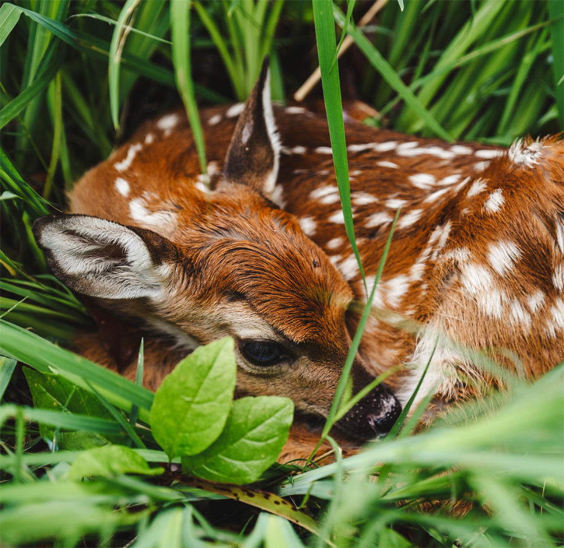

STEPS TO TAKE
If you find a baby animal? Please refer to species specific information (such as Baby Squirrel information) found under the Information Tab. If you find a baby bird? Please refer to the Baby Bird Information found under the Information Tab. If you find a fawn? Until they are two weeks old (or older) and strong enough to keep up with their mother, it it normal for fawns to be found alone, curled up in the grass. THEY ARE NOT ABANDONED. Please refer to the Baby Deer (Fawn) information found under the Information tab. Please do not be a fawn-napper.